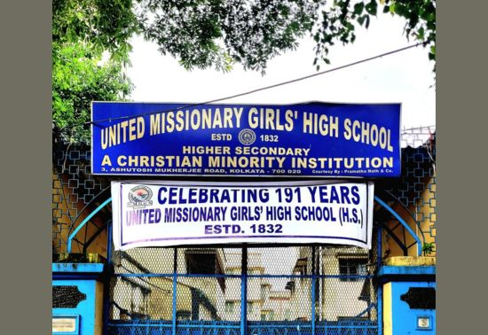
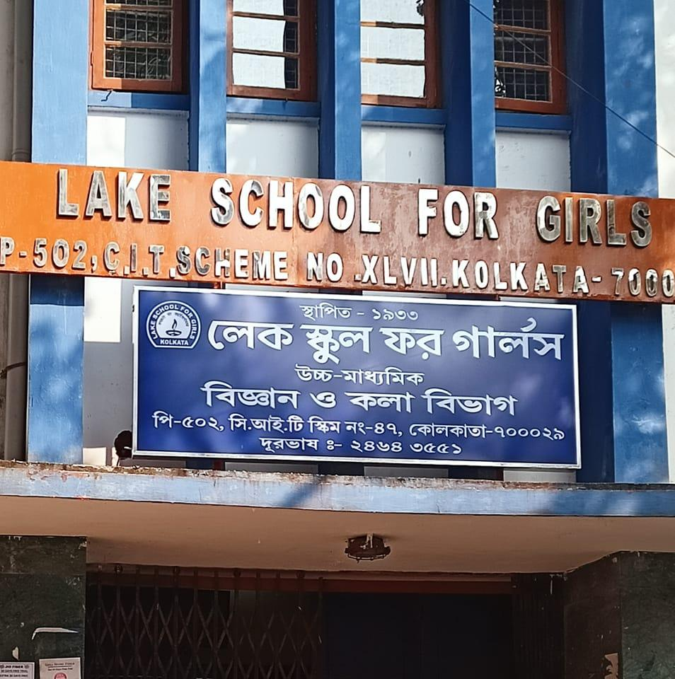
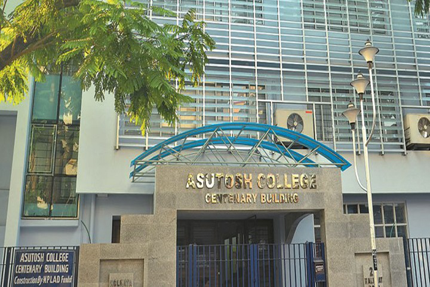

10th Board
Completed my 10th board with a strong academic foundation. This stage helped me build discipline and interest in learning.
My educational journey has shaped my discipline, patience, and analytical thinking. I completed my Bachelor of Science in Physics from Asutosh College, University of Calcutta in 2018 securing overall 55%. Studying Physics helped me develop a logical mindset and a strong problem-solving approach. Before college, I completed my Higher Secondary education from Lake School for Girls under WBCHSE in 2013. I secured 78% in Higher Secondary, which strengthened my academic confidence and consistency. I completed my Secondary education from United Missionary Girls' High School under WBBSE in 2011. In Secondary examination, I secured 77.87%, building a strong foundation for my future studies. My academic background has taught me how to understand complex topics with focus and dedication. The combination of science education and continuous learning has helped me transition toward technology. Today, I use the discipline and analytical skills from my education in my journey as a web developer.

Completed my 10th board with a strong academic foundation. This stage helped me build discipline and interest in learning.

Completed my 12th board with focus on core subjects and problem-solving. This phase improved my confidence and goals.

Completed graduation in Physics from the University of Calcutta, developing analytical thinking and problem-solving skills that now drive my approach to web development.